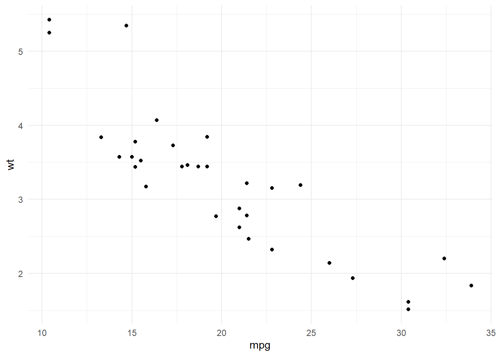
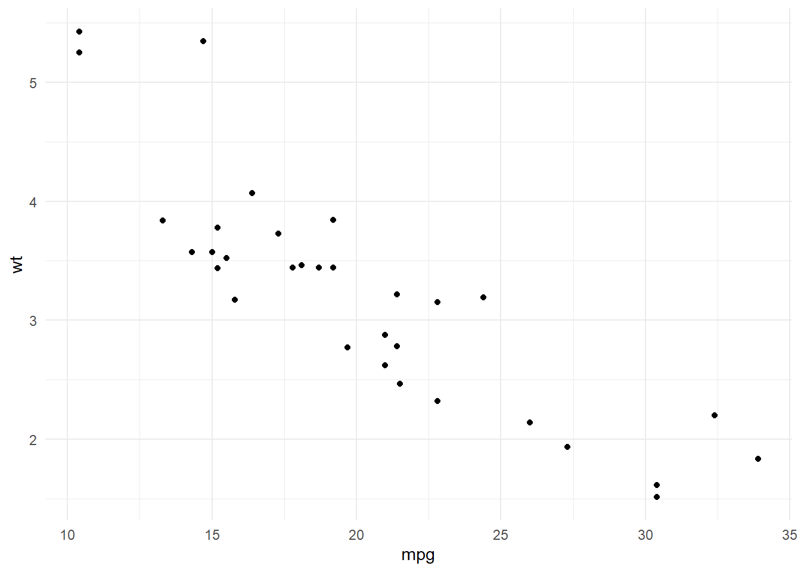

Warning: package 'ggplot2' was built under R version 4.3.3
Warning: package 'ggplot2' was built under R version 4.3.3
[1] "for craps sake"time<-c("ind", "unit", "extent", 1990:2025)
vals<-c("Test Data", "Points", "Gulf Region", rnorm(26, 25, sd=1.5))
test_df<-as.data.frame(cbind(time, vals))Warning in cbind(time, vals): number of rows of result is not a multiple of
vector length (arg 2)test_obj<-IEAnalyzeR::data_prep(test_df)Warning: replacing previous import 'ggplot2::last_plot' by 'plotly::last_plot'
when loading 'IEAnalyzeR'Warning in IEAnalyzeR::data_prep(test_df): NAs introduced by coercionIEAnalyzeR::plot_fn_obj(test_obj, interactive = T)